How extremist ideology translates into real-world actions.
The Hilltop Youth are widely recognized for their direct-action tactics and confrontational presence in the West Bank. Although they lack a formal organizational structure, their activities consistently reflect patterns of settler-extremist behavior. One of the group’s defining methods is the “price-tag” strategy, which involves retaliatory attacks against Palestinians or Israeli authorities following settlement demolitions or government actions they oppose. According to the U.S. Department of the Treasury (2024), the Hilltop Youth have repeatedly attacked Palestinians and destroyed Palestinian homes and property in the West Bank, and have engaged in killings, mass arson, and other “price tag” attacks intended to intimidate Palestinian civilians.
These incidents commonly involve burning vehicles or buildings, vandalizing property, uprooting olive trees, and leaving threatening graffiti (U.S. Department of the Treasury, 2024). Such actions demonstrate how the group uses symbolic and material violence to assert its presence and resistance. Taken together, these activities reveal a persistent pattern of ideologically motivated settlement expansion, vigilante retaliation, and defiance of state authority. Their behavior reflects a blend of religious nationalism and youth-driven rebellion, making their actions distinct from mainstream settler organizations while still significant enough to draw formal sanctions and international concern.
On July 31, 2015, a Palestinian family home in the West Bank village of Duma was set on fire in an arson attack that killed 18-month-old Ali Dawabshe and fatally injured his parents. A former Hilltop Youth member later described how extremist settler cells carefully planned such attacks, conducted surveillance of homes, and destroyed evidence to evade arrest (Lewis, 2015).
 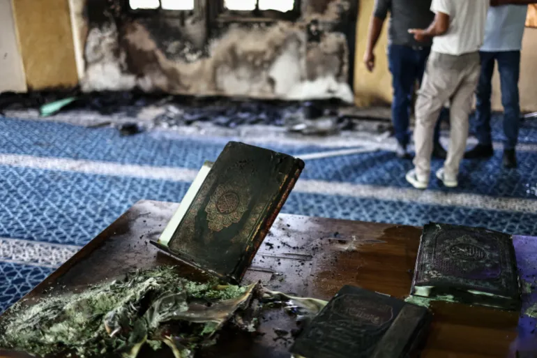
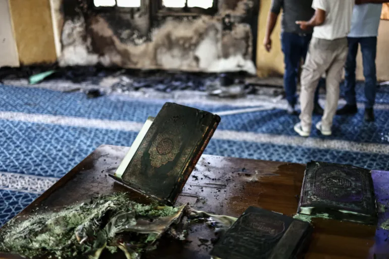
In November 2025, Israeli settlers allegedly set fire to the Hajja Hamida Mosque in the village of Deir Istiya near Salfit, burning parts of the prayer hall and damaging copies of the Quran. Photographs from the scene showed racist anti-Palestinian slogans sprayed on the mosque walls and charred religious texts, prompting Palestinian officials to denounce the arson as a “heinous crime” against a holy site in the occupied West Bank (Al Jazeera, 2025).
Source: Al Jazeera (2025), “Israeli settler attack on West Bank mosque draws international condemnation”
During the 2025 olive harvest season, UN monitors documented over 120 settler attacks across roughly 70 West Bank towns and villages, including vandalism of more than 4,000 olive trees. Al Jazeera reports that settlers torched Palestinian vehicles in Deir Dibwan, seized harvested olives in Sinjil, and worked alongside soldiers who declared agricultural land a “closed military zone,” blocking farmers from their groves. These measures deepen a long-standing pattern in which olive trees — a key symbol of Palestinian land and identity — are destroyed to pressure communities off their land (Al Jazeera, 2025).
Source: Al Jazeera (2025), “Israeli army, settlers target Palestinian olive harvesters in West Bank”
In October 2024, the United States sanctioned “Hilltop Youth,” treating the loosely organised settler activists as a violent extremist group responsible for attacks on Palestinians and clashes with Israeli security forces (Magid, 2024). The US Treasury described Hilltop Youth as carrying out killings, mass arson, and “price tag” rampages in towns such as al-Mughayyir and Turmus Ayya, where homes, vehicles, and livestock were torched and residents beaten. The move, alongside sanctions on individual settler leaders, signals growing international willingness to frame these networks as a serious source of destabilisation in the West Bank.
On January 15, 2020, Israeli forces demolished two illegal Hilltop Youth structures in the Kumi Ori outpost near Yitzhar. One of the homes belonged to Neria Zarog, a prominent Hilltop Youth activist who had previously been removed under an IDF administrative order. Over 450 Border Police officers and Civil Administration inspectors participated in the operation, which sparked clashes as settler youths threw stones at security forces. The demolition highlighted escalating tensions between extremist hilltop activists and the Israeli state, even as the government simultaneously approved new nature reserves across the West Bank (i24NEWS, 2020).
Source: i24NEWS (2020), “Israel demolishes two 'hilltop youth' outposts in West Bank”
In November 2025, BBC reporting documented a coordinated series of settler attacks in the northern West Bank, including arson at a Palestinian warehouse in Beit Lid where lorries were set on fire, as well as tents burned in the Bedouin community of Deir Sharaf (Knell, 2025). The UN’s humanitarian office noted that settler violence had reached its highest recorded levels since it began tracking incidents in 2006, with hundreds of attacks in a single month. During the same period, settlers also assaulted Palestinian olive harvesters, Israeli activists, and journalists, including Reuters photographer Raneen Sawafta, underscoring how Hilltop Youth–style networks target both local communities and those who attempt to document or resist the violence.
 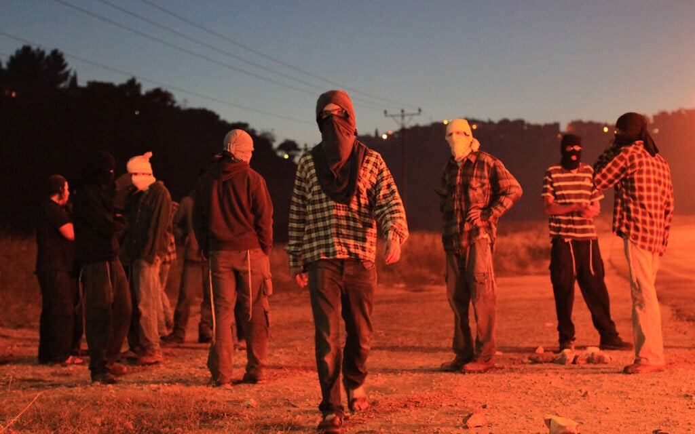
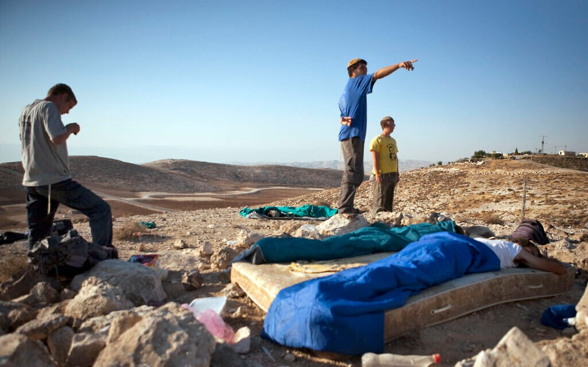
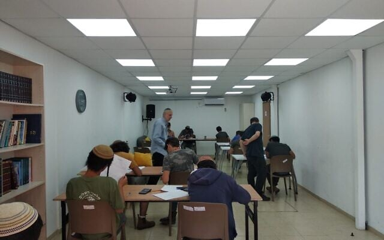
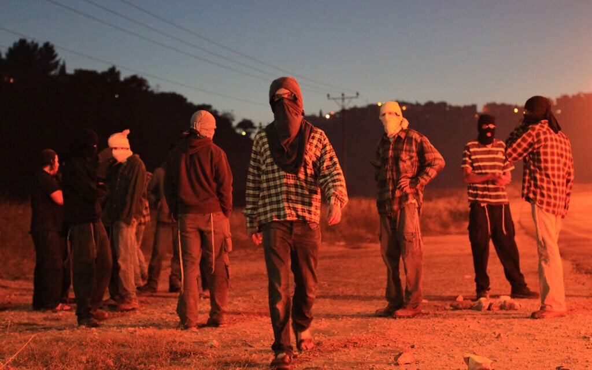
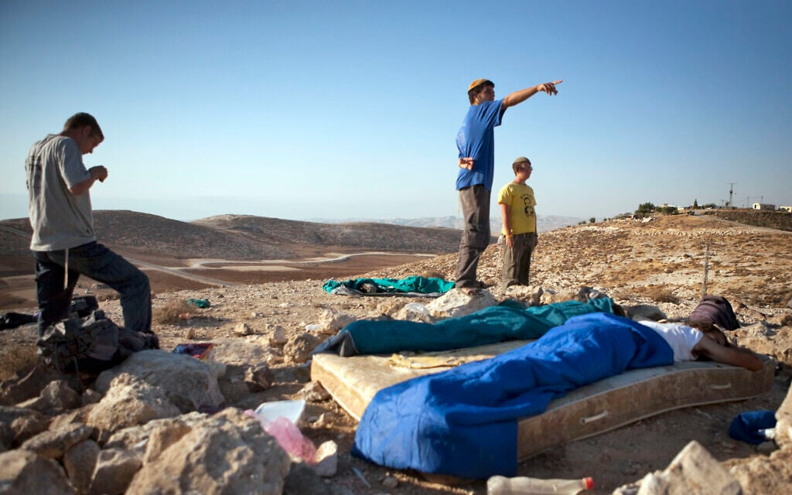
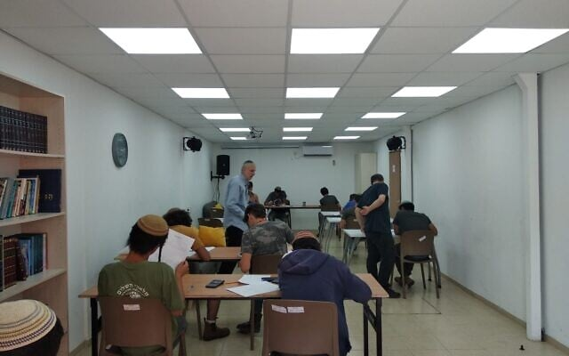
 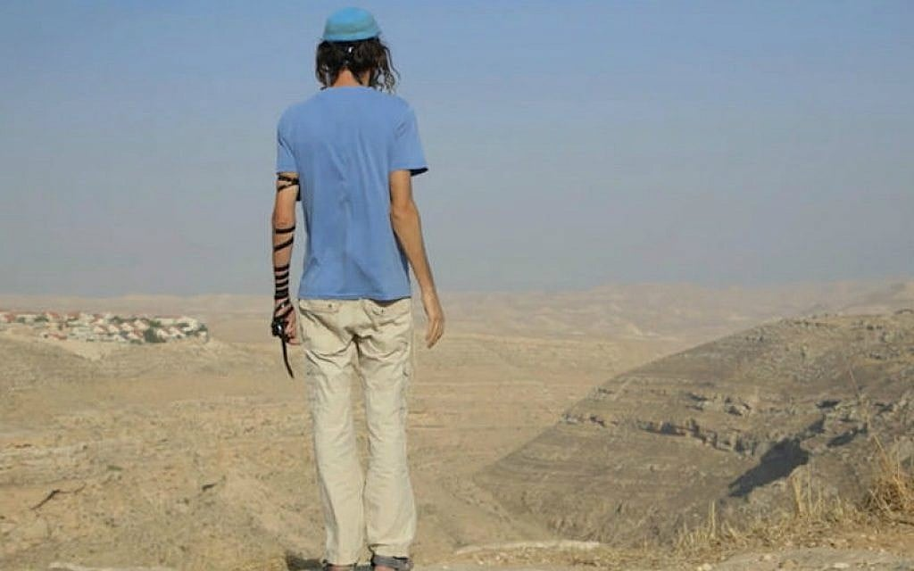
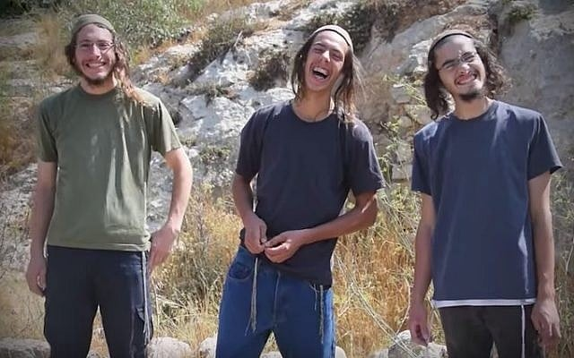
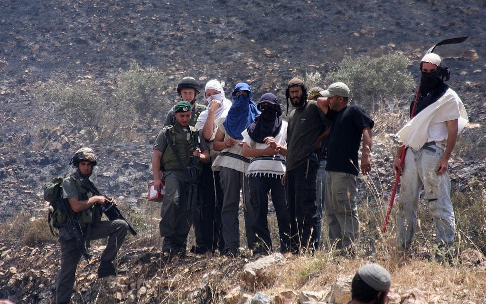
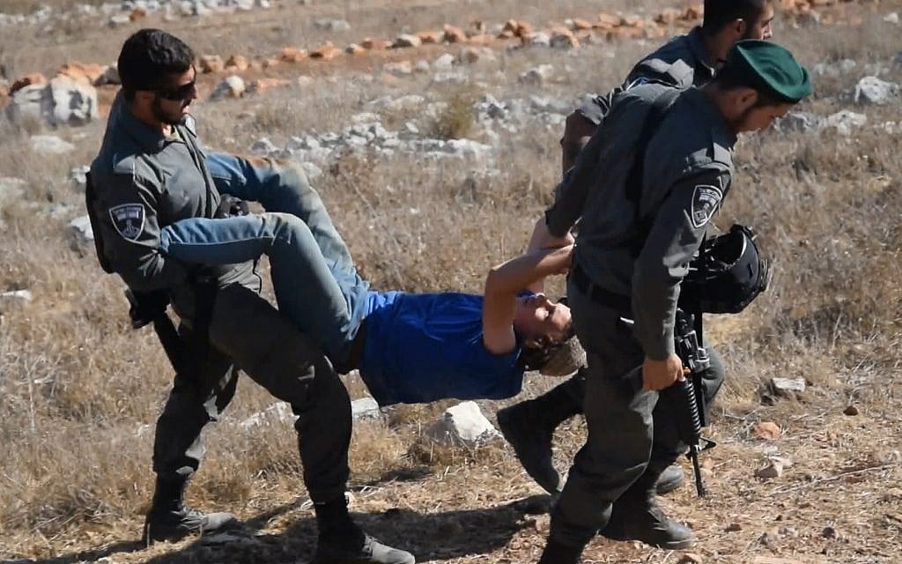
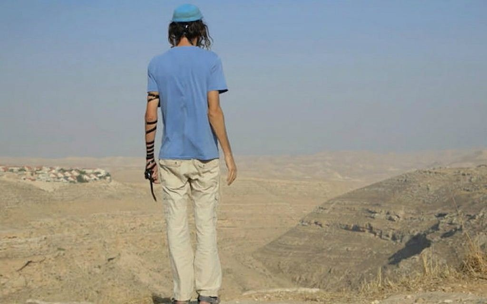
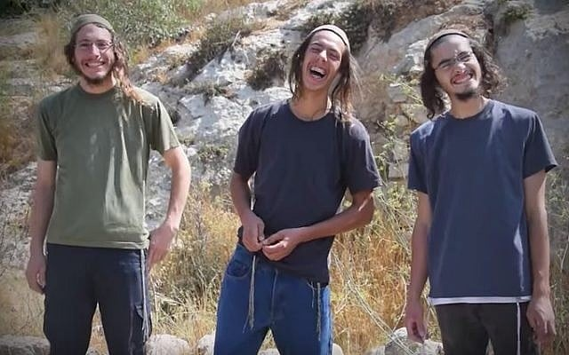
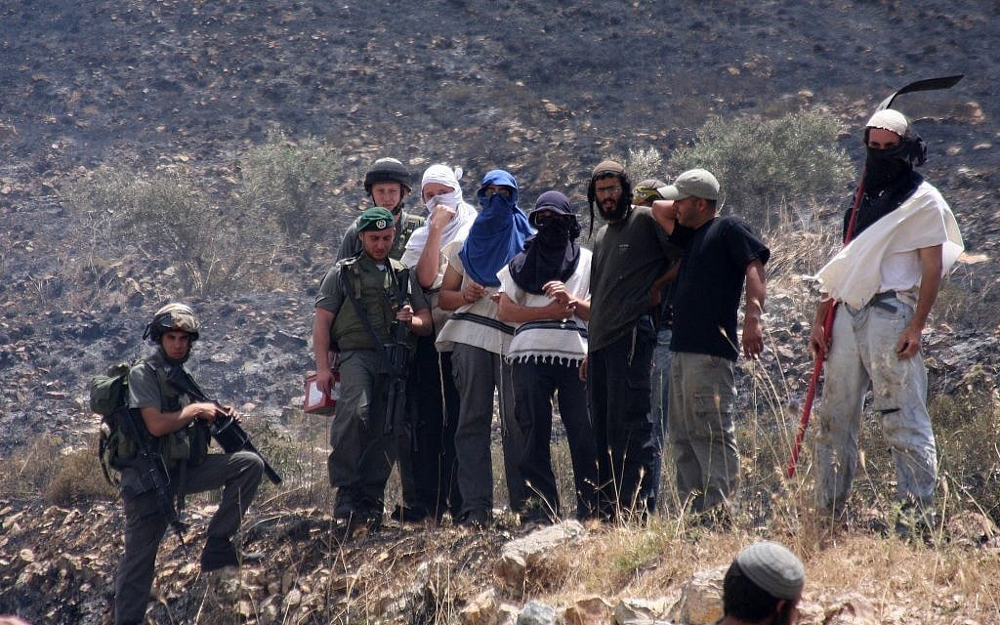
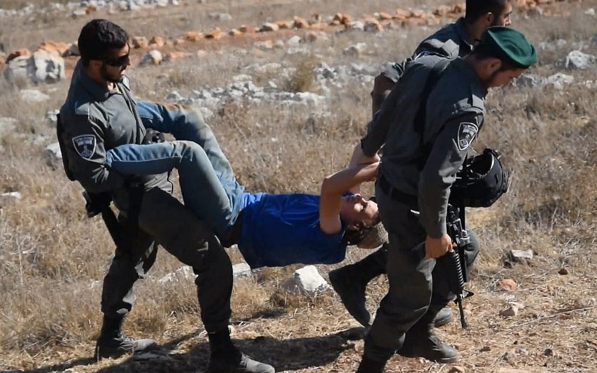

A 2020 Times of Israel report profiles Etgar Beit El, an Education Ministry–backed program that works primarily with Hilltop Youth as “at-risk teens” rather than hardened criminals (Magid, 2020). Serving dozens of boys who split their time between illegal West Bank outposts and makeshift classrooms, the program combines Bagrut exam preparation with weekly one-on-one social work support. Staff argue that many of these youths come from traumatic or unstable homes and are drawn to the hilltops by a mix of ideology, alienation from their communities, and lack of alternatives. While security services continue to treat them as a national security threat, Etgar Beit El seeks to redirect their energy toward education, military or national service, and reintegration into wider Israeli society.